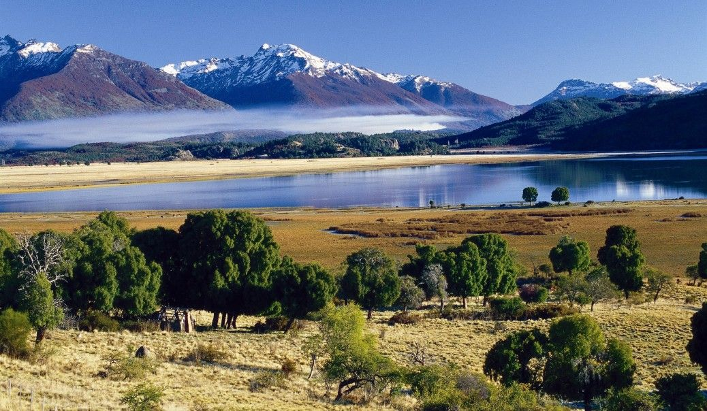
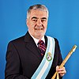

Descripción 🤠
La Provincia del Chubut (tal y como figura en su Constitución provincial) más brevemente, Chubut es una de las 23 provincias en las que está dividido administrativamente el territorio de la República Argentina. A su vez, es uno de los 24 estados autogobernados o jurisdicciones de primer orden3 que conforman el país, y uno de los 24 distritos electorales legislativos nacionales.45 Su capital es Rawson y su ciudad más poblada, Comodoro Rivadavia. Está ubicada al centrosur de la región patagónica (entre los paralelos 42 y 46 de latitud sur), que ocupa la mitad sur del país, limitando al norte con Río Negro, al este con el mar Argentino (océano Atlántico), al sur con Santa Cruz y al oeste con Chile, cuyo límite está determinado por la divisoria de agua de la cordillera de los Andes.
Con 509.108 habs. en 2010 es la séptima provincia menos poblada —por delante de San Luis, Catamarca, La Rioja, la Provincia de La Pampa, Santa Cruz y Tierra del Fuego, Antártida e Islas del Atlántico Sur, la menos poblada—, con 224 686 km², la tercera más extensa —por detrás de la Provincia de Buenos Aires y Santa Cruz— y con 2,3 hab/km², la tercera menos densamente poblada, por delante de la Provincia de La Pampa y Santa Cruz, la menos densamente poblada.

Gobernadores y sus partidos 🤡
Estos son los ultimos 5 gobernadores:
| Gobernador | Partido | |
|---|---|---|
| Jose Luis Lizurume- | UCR | |
|  | Mario Das Neves- | PJ |
| Martín Buzzi- | PJJ | |
| Mario Das Neves- | CST | |
 |
Mariano Arcioni- | CST |
CLIMA
La región está dominada por clima frío, árido y fuertes vientos occidentales. Las elevaciones andinas son un obstáculo para los húmedos vientos del oeste que, obligados a elevarse, descargan en ellas intensas lluvias y nevadas invernales.

POBLACIÓN
Chubut posee una relativa baja densidad de población comparada con las del resto de las provincias del país. La mayoría de sus habitantes se han localizado en la zona marítima del este y en los valles cordilleranos del oeste, donde el clima es más benigno.
LIMITES DE LA PROVINCIA
Chubut se extiende entre los paralelos 42º y 46º de Latitud Sur, limita al Norte con la Provincia de Río Negro; al Sur con la Provincia de Santa Cruz; al Oeste con la República de Chile y al Este con el Océano Atlántico.
CAPITAL
Rawson es la capital de la provincia del Chubut desde 1884 y se la reconoce como “Madre de Ciudades”. Fue fundada el 15 de septiembre de 1865, constituyendo la 1º población estable del Chubut.